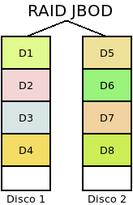
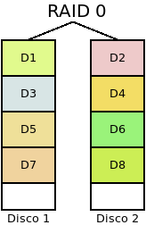
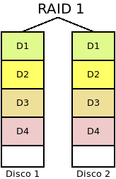
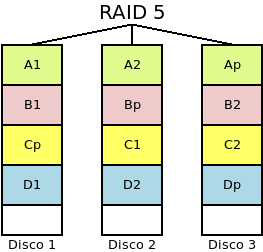
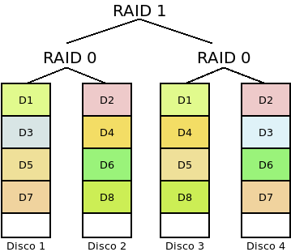
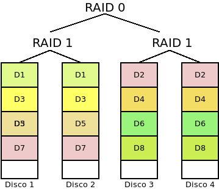
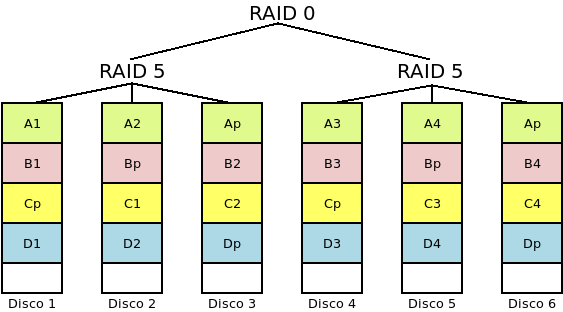

5.6. RAIDs¶
5.6.1. Introducción teórica¶
Un RAID puede definirse como un sistema de almacenamiento que, mediante técnicas hardware o software, utiliza de manera conjunta varios discos para distribuir los datos entre todos ellos con la finalidad, respecto al uso de un único disco. de:
Introducir redundancia para hacer el sistema más tolerante a fallos, de manera que, aunque falle algún disco, el sistema pueda seguir accediendo a los datos sin interrupciones. El grado de tolerancia a los fallos puede medirse calculando la probabilidad de fallo irrecuperable.
Téngase en cuenta que cuando hay redundancia más importante que el hecho de que fallen los discos es el hecho de que lo hagan varios casi simultáneamente. Por ese motivo, algunos consideran buena idea mezclar discos de distinto fabricante o discos de un mismo fabricante, pero de distinto lote. Pero, por otro lado, puede no ser una buena idea mezclar discos con distinto rendimiento.
Aumentar la capacidad de almacenamiento, esto es, constituir una unidad de almacenamiento mayor que la de un disco individual. Es conveniente tener en cuenta que en los discos que constituyen un RAID es aprovechable la capacidad de cada uno sólo hasta la capacidad del más pequeño, por lo que para no desaprovechar espacio de disco lo óptimo es que todos los discos sean del mismo tamaño.
Aumentar el rendimiento en las operaciones de lectura y escritura.
El grado de consecución de estos propósitos depende de cuál sea el tipo de RAID que se implemente; y el resultado aparente de la implementación será la creación de un dispositivo virtual sobre el que el sistema operativo podrá crear particiones y sistemas de archivos.
Tipos de RAIDs
Antes de pasar a describir los más comunes, es preciso fijar la siguiente nomenclatura:
s es la capacidad del disco físico más pequeño.
n es el número de discos físicos que constituye el RAID.
p es la probabilidad de que se rompa un disco en un periodo de tiempo determinado. Se supondrá la misma para todos los discos. Para estimarla podemos guiarnos por las estadísticas que publica la compañía Backblaze basada en los fallos de sus propios discos duros. Para 2019, estos fueron los datos.
En RAIDs anidados, g es el número de grupos de discos.
En RAIDs anidados, m es el número de discos del grupo anidado. Por tanto, \(n = g*m\).
\(P^n_{rX}(p)\) es la probabilidad de fallo irrecuperable de un RAID X constituido por n discos cuya probabilidad individual de fallo es p. Cuando el RAID es anidado, el número de discos se notará \(n,m\). Por ejemplo, \(P^{6,2}_{r10}(1\%)\) es la probabilidad de fallo irrecuperable de un RAID 10 de seis discos con tres divisiones de dos discos y una probabilidad de fallo individual de disco del 1%.
- No RAID
Antes de entrar en los tipos de RAID es conveniente citar agrupaciones de discos que, aunque no lo son, suelen ser permitidas por las soluciones para crear RAIDs.
Por una parte, suele usarse el término JBOD (acrónimo en inglés de un mero puñado de discos) para identificar a un conjunto de discos del que se preserva la independencia de cada uno. En cambio, cuando estos discos definen un único disco virtual que es la concatenación de todos los discos que lo constituyen, se habla de span o big1. El software, simplemente, se limita a crear el dispositivo virtual e ir rellenado con datos sucesivamente los discos, de modo que cuando acaba de llenar uno, sigue con el siguiente.
En este segundo caso, de concatenación:
El sistema no es tolerante a fallos, puesto que no existe redundancia. Ahora bien, la rotura de un disco implica únicamente la pérdida de los archivos almacenados en él.
La probabilidad de que el sistema falle parcialmente es de \(P^n_{r0}(p) = 1-(1-p)^n\).
La capacidad del conjunto es la suma de todas las capacidades, esto es, \(n*s\), aunque en este caso no es necesario siquiera que los discos tengan la misma capacidad.
No hay mejora alguna en el rendimiento.
Nota
En realidad, esto podría ser, simplemente, un grupo de volúmenes de LVM o, lo que hemos denominado, disco virtual en nuestra introducción teórica.
- RAID 0 (o Volumen dividido)
Se forma con dos o más discos entre los cuales se distribuye equitativamente la información sin incluir información redundante.
En lo referente a los propósitos de RAID:
El sistema no es tolerante a fallos, puesto que no existe redundancia. En consecuencia, no puede romperse ningún disco. Y es más, cuanto mayor sea el número de discos, menos fiabilidad tendrá el sistema, ya que aumenta la probabilidad de que uno de ellos falle y se desbarate toda la información.
La probabilidad de que el sistema falle es de \(P^n_{r0}(p) = 1-(1-p)^n\).
La capacidad del conjunto es \(n*s\).
Mejora el rendimiento tanto en la lectura como en la escritura, ya que se puede leer y escribir simultáneamente en los discos.
- RAID 1 (o Espejo)
Se forma con dos o más discos de modo que lo que se escribe en uno se replica en todos los demás.
En este caso, el conjunto es altamente redundante tanto más cuantos más discos haya, a costa de sacrificar capacidad:
El sistema es capaz de soportar la ruptura de \(n-1\) discos sin que se produzca pérdida de información.
La probabilidad de que el sistema falle es de \(P^n_{r1}(p) = p^n\).
No aumenta la capacidad del conjunto que seguirá siendo la capacidad individual de uno de los discos, \(s\).
Aumenta el rendimiento de las lecturas, ya que pueden realizarse lecturas simultáneas, pero no el de escritura.
- RAID 5
Es un sistema de al menos tres discos físicos, de manera que la información se distribuye en todos ellos, excepto en uno en el que se incluye información de paridad, por lo que es posible recuperar la información ante el fallo de uno de los discos. La base del cálculo de la paridad es la operación lógica XOR que se caracteriza porque cuando el número de 1 en los operandos es impar el resultado es 1 y, cuando es par, 0. En consecuencia, suponiendo que los operandos sean bits, obtenemos la siguiente tabla:
O1
O2
O2
O1⊕O2⊕O3
0
0
0
0
0
0
1
1
0
1
0
1
0
1
1
0
1
0
0
1
1
0
1
0
1
1
0
0
1
1
1
1
en la que podremos darnos cuenta, que tapemos la columna que tapemos, podemos deducir sus valores aplicando la operación XOR a los valores de las columnas aún visibles. En un RAID 5 el cálculo de la paridad es más complejo, ya que tal cálculo se hace a nivel de bloques y el bloque de paridad se distribuye equitativamente entre todos los discos físicos.
En este tipo:
Es tolerante a fallos en la medida, en que la paridad permite que se pueda estropear un único disco.
La probabilidad de que el sistema falle es la probabilidad de que falle un RAID 0 menos la probabilidad de que sólo se rompa un disco, ya que en este caso el RAID 0 sí falla, pero el RAID 5, no. Por tanto: \(P^n_{r5}(p) = P^n_{r0} - n*p*(1-p)^{n-1}\).
Aumenta la capacidad, ya que la paridad sólo ocupa el equivalente a un disco físico. Por tanto, obtendremos una capacidad de \((n-1)*s\).
Hay mejora en el rendimiento de las lecturas, pero hay una penalización en las escrituras, ya que una escritura implica leer datos del resto de discos para generar la paridad y escribir ésta. Esta bajada en el rendimiento en las escrituras es su principal defecto.
Variantes de este nivel son:
El RAID 4 en que la información de paridad se almacena siempre en el mismo disco.
El RAID 3 en que ocurre lo mismo, pero, además, los datos se dividen en bytes y no en bloques.
El RAID Z, que es implementado por el sistema de archivos ZFS y es semejante al RAID 5, pero que añade variantes para mejorar el rendimiento en las escrituras.
- RAID 6
Es parecido a un RAID 5, pero genera dos bloques de paridad y no uso sólo. Por tanto, el número mínimo de discos para constituirlo es 4. En él, se sacrifica la capacidad por el aumento de fiabilidad, ya que pueden fallar hasta dos discos:
Tolera que fallen hasta dos discos.
La probabilidad de que el sistema falle es la probabilidad de que falle un RAID 5 menos la probabilidad de que fallen dos discos, ya que en este caso un RAID 5 falla, pero un RAID 6, no. Por tanto: \(P^n_{r6}(p) = P^n_{r5}(p) - n*(n-1)*p^2*(1-p)^{n-2}\).
Aumenta la capacidad, hasta \((n-2)*s\).
Presenta unas características de rendimiento semejantes a la de su primo hermano el RAID5, aunque respecto a éste no mejora el rendimiento en las lecturas y empeora el de las escrituras.
Nota
El sistema de archivos ZFS implementa también su propia versión con mejor rendimiento de escritura frente el RAID6, a la que denomina RAID Z2.
Hay, además, sistemas RAIDs que se constituyen anidando dos o más niveles de RAID. Los más utilizados son:
- RAID 0+1 (o Espejo de divisiones o RAID 01):
Es un sistema híbrido formado con un mínimo de cuatro discos, en los que los n discos se agrupan en g grupos de m cada uno. Cada grupo de m discos constituye un RAID 0 y con todos los grupos se forma un RAID 1. Si tenemos cuatro discos y los agrupamos de 2 en 2, este será el resultado:
Con esta disposición:
Hay tolerancia a fallos, ya que el sistema falla sólo cuando falla al menos un mismo disco de todos los grupos en RAID 0.
La probabilidad de que falle irremediable el sistema2 es \(P^{n,m}_{r01}(p) = P^{n/m}_{r1}(P^m_{r0}(p)) = (1 - (1 - p)^m)^{n/m}\)
Aumenta la capacidad hasta \(m * s\).
Hay mejora en el rendimiento de lecturas y escrituras.
- RAID 1+0 (o Divisiones en espejo o RAID 10):
El sistema es parecido al anterior, pero se invierten los niveles: cada grupo de m discos forma un RAID 1 y con todos los grupos se forma un RAID 0. Como en el caso anterior se requieren al menos cuatro discos:
Esta disposición supone:
Hay tolerancia a fallos, ya que el sistema falla cuando fallan todos los discos de una misma división.
La probabilidad de que el sistema falle es de \(P^{n,m}_{r10}(p) = P^{n/m}_{0}(P^m_{r1}(p)) = 1-(1-p^m)^\frac{n}{m}\).
Aumenta la capacidad hasta \(\frac{n}{m}*s\).
Hay mejora en el rendimiento de las lecturas y las escrituras,
- RAID 5+0 (o RAID 50)
Como el anterior, pero el nivel del RAID anidado es un RAID5, por lo que el mínimo de discos para constituirlo es 6:
Hay tolerancia a fallos, ya que el sistema falla cuando falla uno de los RAIDs 5 que constituye cualquiera de las divisiones, esto es que fallen dos discos de una misma división.
La probabilidad de que el sistema falle es de \(P^{n.m}_{r50}(p) = P^{n/m}_{0}(P^m_{r5}(p))\).
Aumenta la capacidad hasta \((n - \frac{n}{m})*s\).
Mejora el rendimiento en lectura y escritura respecto al RAID 5.
También son comunes las anidaciones en tres niveles del RAID 100 y el RAID 101.
Consideraciones
Sea cual sea la implementación y el nivel del RAID, hay una serie de consideraciones a tener en cuenta:
Al constituirlos es necesario que se creen una serie de estructuras de metadatos a semejanza de lo que ocurre con los sistemas de ficheros. Este hecho, puede darnos problemas.
Debe habilitarse algún mecanismo para advertir al administrador del fallo de disco, a fin de que sea diligente en su sustitución. Estos mecanismos pueden ser muy variados (pitidos, leds, apunte en el registro), pero es conveniente que incluyan el envío de un correo electrónico de aviso (o cualquier otro método de teleaviso).
Al reemplazarse un dispositivo defectuoso por uno nuevo, se desencadena un proceso de recuperación para volver a la situación previa a la rotura.
Para minimizar el tiempo de sustitución de un disco defectuoso, algunos sistemas incorporan un dispositivo de reserva (hot spare) que se encuentra conectado pero inactivo, por lo que no forma parte efectiva del RAID. Al surgir un fallo en algún disco, éste se inhabilita y automáticamente el disco de reserva ocupa su lugar en el RAID, por lo que comienza inmediatamente el proceso de recuperación. La labor del administrador consistirá en añadir al sistema un nuevo disco de reserva para la próxima vez que se produzca una rotura.
Tenga presente que, si el sistema sólo tenía un grado de redundancia (p.e. un RAID 5 o un RAID 1 de dos discos), durante el proceso de reconstrucción el sistema es vulnerable por lo que cualquier nuevo fallo provoca la pérdida irrecuperable de los datos. Además, este proceso requiere muchas lecturas sobre los discos supervivientes, lo que los sobrecarga de trabajo y hace al sistema especialmente propenso a un nuevo fallo, esta vez fatal. Por eso, algunos administradores consideran que tras un fallo lo mejor es proceder a un backup de los datos antes de la reconstrucción; y rechazan como buena la idea de habilitar discos de reserva (véase, por ejemplo, este artículo).
Técnicas de implementación
Hay tres estrategias para la implementación de un sistema RAID:
- Mediante controladora hardware
Por lo general, a una tarjeta de expansión que hace las veces de controladora de disco se le conectan los discos físicos que constituirán el RAID. En este caso, la configuración se establece mediante un firmware particular de la propia controladora y se carga con anterioridad al arranque del sistema operativo, por lo que para el sistema operativo sólo tiene conocimiento de la existencia del dispositivo virtualizado.
Es la solución más costosa, pero la más eficiente al dedicarse a ella hardware específico.
- Mediante firmware
También denominado RAID híbrido o fakeRAID, que es una solución barata en la que no hay ninguna controladora específica dedicada a la constitución del RAID, sino que el chip de la controladora de disco incluye firmware específico para la definición del RAID. Como en el caso anterior, la configuración del RAID se hace con anterioridad a la carga del sistema operativo, por la que éste sólo muestra el dispositivo virtual, pero será el procesador el encargado de procesar todo lo necesario, como en el caso posterior.
Aunque aparentemente es una solución similar, al no existir hardware específico dedicado y delegar todos los cálculos en el procesador, su rendimiento es peor y, por lo general, es conveniente una solución software pura.
- Mediante software
esto es, mediante aplicaciones que provee el propio sistema operativo o porque sea una característica que soporta el sistema de ficheros. En este caso, el sistema operativo verá tanto los dispositivos físicos como el dispositivo virtual resultado de haber constituido el RAID.
Los sistemas operativos comunes traen herramientas para la creación de RAIDs:
MasOs, FreeBSD, NetBSD o OpenBSD cada uno con sus respectivas herramientas.
Windows gracias a Logical Disk Manager y en las versiones modernas de servidor a Storage Spaces.
Linux mediante su módulo md, que será al que dediquemos el resto del epígrafe.
Por su parte, algunos sistemas de ficheros soportan directamente la constitución de dispositivos RAID como ZFS o BtrFS.
Equivalencias con ZFS¶ Nivel
Nombre en ZFS
0
Striped Vdev
1
Mirrored Vdev
5
Z
6
Z2
10
Striped mirrored Vdev
50, 60
Striped RaidZ Zpool
Ver también
Puede consultar una breve descripción de cada RAID en este artículo sobre ZFS.
Es importante tener presente que la constitución de un RAID exige el almacenamiento de los metadatos que lo definen. En los tres casos, esos metadatos se almacenan en los propios dispositivos de almacenamiento3. Es conveniente, tener presente esto, sobre todo cuando sustituimos el hardware en los dos primeros casos:
Si nuestra intención es ser capaz de leer datos, entonces necesitaremos que el sistema sea capaz de entender tales metadatos:
En el caso de los RAID por hardware, el núcleo de linux dispone de algunos drivers (véase esta página de la wiki de debian al respecto).
En el caso de los fakeRAID, puede sacarnos del apuro dmraid(8).
Si nuestra intención es reaprovechar los discos sin preocuparnos por la información, entonces deberemos asegurarnos de eliminar los metadatos. Para ello, suele ser suficiente con sobrescribir con ceros los primeros y los últimos 512KiB de cada dispositivo:
# dd < /dev/zero > /dev/sdX bs=512 count=1024 # dd < /dev/zero > /dev/sdX bs=512 seek=$((`blockdev --getsz /dev/sdX` - 1024)) count=1024
5.6.2. RAIDs en Linux¶
Ilustraremos la creación y manipulación de RAID implementando un RAID 1, porque no entraña excesiva dificultad crear RAIDs de otros niveles. Es obvio que para ello necesitaremos los discos físicos que constituyen el RAID. Para evitarlos usaremos ficheros que emulen estos discos físicos:
# truncate -s 500M /tmp/0.disk
# losetup /dev/loop0 /tmp/0.disk
# truncate -s 500M /tmp/1.disk
# losetup /dev/loop1 /tmp/1.disk
De modo que nuestros dispositivos físicos serán /dev/loop0 y
/dev/loop1 en vez de sda, sdb, etc.
Advertencia
Tenga presente que está manipulando directamente dispositivos de
disco, por lo que si confunde las unidades y realiza la operación sobre el
disco que contiene su sistema operativo, lo perderá todo. La guía utiliza
/dev/loop0 y /dev/loop1 entre otras cosas para evitar que un
corta y pega irreflexivo, provoque una catástrofe en su sistema.
5.6.2.1. Implementaciones¶
El núcleo de linux dispone de un driver llamado MD para el soporte de volúmenes RAID. Y, de hecho, como herramienta de bajo nivel existe dmsetup(8). Sin embargo, es mejor usar herramientas de usuario más sencillas para la creación y gestión de estos dispositivos, para lo cual tenemos fundamentalmente dos posibilidades:
mdadm, que es una herramienta exclusiva para la gestión de estos dispositivos y que nos permite un control más preciso sobre nuestra configuración.
lvm que, desde su versión 2, permite la definición de volúmenes lógicos que sean a su vez dispositivos RAID, para lo cual el grupo de volúmenes deberá haberse construido sobre dos o más volúmenes físicos, obviamente.
Estudiaremos ambas posibilidades.
5.6.3. Pruebas de rendimiento¶
Por hacer
Proponer pruebas de lectura y escritura con alguna de las herramientas sogeridas en este artículo de Linuxhint.
Notas al pie
- 1
Aunque puede llegarse a utilizar también el término JBOD.
- 2
Para el cálculo se está suponiendo que no pueden recomponerse los datos tomando discos de dos grupos distintos. Si esto puede hacerse, entonces la probabilidad será menor. ¿Puede hacerse?
- 3
Incluso en los RAID por hardware y los fakeRAID en los que habría cabido la posibilidad de que esos metadatos se hubieran registrado en memoria NVRAM de la controladora o de la placa base.